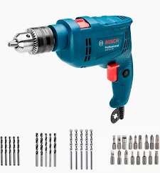

Taladro 2000

| Especificacions | valor |
|---|---|
| Fuente de alimentación | CA/CC |
| Velocidad máxima de rotación | 3500 RPM |
| Voltaje | 127 Voltios |
| Potencia máxima | 550 Vatios |
| Tipo de taladro | Taladro de martillo |
Reseñas de usuarios
Juan Pérez
Calificación: 5 Estrellas
Muy buen producto, lo recomiendo.
Ana López
Calificación: 3 Estrellas
Funciona bien pero el cable es corto.